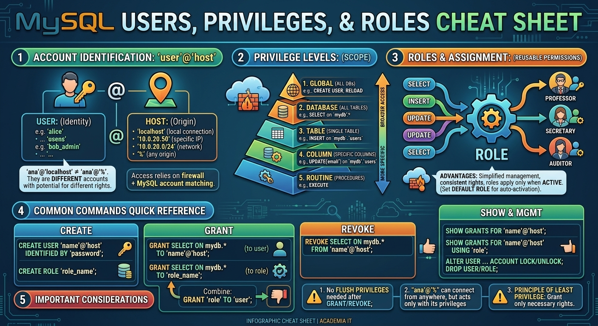

Usuarios, Roles y Gestión de Permisos en MySQL
1 Fundamentos de Seguridad: Autenticación vs. Autorización
En la administración de bases de datos, la seguridad se articula en dos fases secuenciales:
Autenticación (¿Quién eres?): Proceso mediante el cual el motor verifica la identidad de un cliente conectándose mediante la combinación de su cuenta (
'usuario'@'host') y su método de credenciales (contraseña, socket UNIX, plugin, etc.).Autorización (¿Qué puedes hacer?): Una vez verificada la identidad, el motor consulta las tablas del sistema para comprobar si esa cuenta dispone del privilegio necesario para ejecutar la sentencia SQL solicitada sobre el objeto correspondiente.
+------------------+ 1. Autenticación +-------------------+
| Cliente SQL | ------------------------> | MySQL Server |
| 'ana'@'10.0.0.5' | | (mysql.user) |
+------------------+ +-------------------+
|
| 2. Autorización
v
+-------------------+
| Valida permisos |
| sobre el objeto |
+-------------------+Referencia: Para revisar la configuración inicial del usuario administrador (
root), la autenticación medianteauth_sockety la sintaxis básica de creación de usuarios, consulta sgbd.html#permisosIntro.
2 La Identidad Bidimensional de Usuario: 'Usuario'@'Host'
A diferencia de los sistemas operativos donde un usuario se identifica solo por su nombre, en MySQL la identidad de una cuenta es estrictamente bidimensional:
\[\text{Cuenta} = \text{'Usuario'}\@\text{'Host'}\]
| Componente | Definición | Ejemplo |
| Usuario | Nombre de la entidad (persona física o servicio/aplicación). | 'ana', 'museo_app' |
| Host | Origen (IP, nombre de dominio o interfaz) desde el cual se permite la conexión. | 'localhost', '192.168.1.50', '10.0.20.0/24', '%' |
Implicación clave:
'ana'@'localhost','ana'@'192.168.1.50'y'ana'@'%'son tres cuentas completamente independientes dentro del servidor (registradas enmysql.user). Pueden tener distintas contraseñas, permisos e incluso métodos de autenticación.
2.1 Tipos de Cuentas: Personas vs. Aplicaciones
Usuarios de Aplicación / Servicios: Cuentas creadas para que sistemas o backends (PHP, Python, Node.js) interactúen con la BD. Deben tener un alcance limitado a la IP o subred del servidor de aplicaciones y únicamente los permisos DML mínimos necesarios (
SELECT,INSERT,UPDATE,DELETE).Usuarios Humanos (Desarrolladores / Administradores): Cuentas asociadas a personas. Se recomienda asignarles credenciales individuales (nunca compartir la cuenta
root) para mantener la trazabilidad y la auditoría.
2.2 Notación de Hosts Comunes
'localhost': Conexión local mediante archivo de socket UNIX (no utiliza pila TCP/IP).'127.0.0.1': Conexión local obligada a través de la interfaz de loopback TCP/IP.'192.168.1.50': Restringe la conexión a una dirección IP fija.'10.0.20.0/24': Permite el acceso desde cualquier IP dentro del rango CIDR especificado (10.0.20.1a10.0.20.254).'%': Comodín (wildcard) que permite conectarse desde cualquier dirección IP remota.
2.3 Gestión del Ciclo de Vida de Usuarios
2.3.1 Creación de Cuentas (CREATE USER)
-- Crear cuenta con contraseña local
CREATE USER 'museo_app'@'127.0.0.1' IDENTIFIED BY 'ClaveSegura123!';
-- Crear cuenta para subred específica
CREATE USER 'museo_app'@'10.0.20.0/24' IDENTIFIED BY 'ClaveSegura123!';2.3.2 Modificación y Bloqueo de Cuentas (ALTER USER)
-- Cambiar contraseña de un usuario
ALTER USER 'ana'@'192.168.1.50' IDENTIFIED BY 'NuevaClave456!';
-- Bloquear el acceso a una cuenta temporalmente
ALTER USER 'ana'@'192.168.1.50' ACCOUNT LOCK;
-- Desbloquear la cuenta
ALTER USER 'ana'@'192.168.1.50' ACCOUNT UNLOCK;2.3.3 Eliminación de Cuentas (DROP USER)
-- Elimina la cuenta y revoca implícitamente todos sus permisos asociados
DROP USER 'ana'@'192.168.1.50';– Elimina la cuenta y revoca implícitamente todos sus permisos asociados
DROP USER 'ana'@'192.168.1.50';3 Configuración del Servidor para Acceso Remoto (bind-address)
Por defecto, en instalaciones de producción (como Ubuntu Server), el demonio de MySQL (mysqld) viene configurado para escuchar únicamente en la interfaz local (127.0.0.1) por motivos de seguridad.
Si creas un usuario con host remoto (ej. 'app'@'192.168.1.%') pero no cambias la configuración del servidor, la conexión remota será denegada a nivel de red antes de llegar al proceso de autenticación.
3.1 Pasos para habilitar conexiones externas:
- Editar el archivo de configuración: Normalmente ubicado en
/etc/mysql/mysql.conf.d/mysqld.cnf(en Ubuntu/Debian):
[mysqld]
# Cambiar 127.0.0.1 por 0.0.0.0 para escuchar en todas las interfaces de red
bind-address = 0.0.0.0Reiniciar el servicio MySQL:
sudo systemctl restart mysqlVerificar puertos e interfaz: Asegurar que el puerto TCP
3306está abierto en el cortafuegos del sistema (ufwo similar).
4 Clasificación de Privilegios: Sistema vs. Objeto
Los privilegios en MySQL definen el alcance de las acciones permitidas y se dividen en dos categorías principales según el nivel de impacto:
4.1 Privilegios de Sistema (Globales)
Afectan a la administración general del servidor y no están vinculados a una tabla o base de datos específica. Se otorgan globalmente utilizando la sintaxis ON *.*. Hay muchos más, pero estos son algunos de los más frecuentes:
CREATE USER: Permite crear, alterar, renombrar y eliminar cuentas de usuario.GRANT OPTION: Permite delegar privilegios a otros usuarios.SUPER: (Obsoleto/Restringido desde MySQL 8.0) Permite operaciones críticas como cancelar hilos de ejecución o cambiar variables globales.RELOAD: Permite ejecutar comandos de mantenimiento comoFLUSH PRIVILEGES.PROCESS: Permite visualizar los hilos que se están ejecutando en el servidor (SHOW PROCESSLIST).SYSTEM_VARIABLES_ADMIN: Introducido en MySQL 8.0 para sustituir parte de las funciones deSUPER.
4.2 Privilegios de Objeto (Específicos)
Aplican sobre elementos concretos dentro del servidor (bases de datos, tablas, columnas, vistas, procedimientos almacenados).
Nivel de Base de Datos (
ON base_datos.*):CREATE,DROP,ALTER,CREATE ROUTINE.Nivel de Tabla (
ON base_datos.tabla):SELECT,INSERT,UPDATE,DELETE,INDEX,ALTER,REFERENCES.Nivel de Columna (
ON base_datos.tablaespecificando columnas): Permite restringir el acceso a campos concretos. Por ejemplo:GRANT SELECT(nombre, email), UPDATE(email) ON empresa.empleados TO 'soporte'@'192.168.1.%';Nivel de Rutina (
ON PROCEDURE/ON FUNCTION):EXECUTE,ALTER ROUTINE.
┌─ Globales (ON *.*) ─────────► Adm. del servidor (CREATE USER, RELOAD)
│
Privilegios en MySQL ────┼─ Base de Datos (ON bd.*) ───► Estructura (CREATE, DROP, ALTER)
│
├─ Tablas (ON bd.tabla) ──────► Datos (SELECT, INSERT, UPDATE, DELETE)
│
└─ Columnas ──────────────────► Campos específicos (ej. UPDATE(email))Aunque en el lenguaje cotidiano y en muchos manuales se usan como sinónimos, técnicamente existe una distinción conceptual importante en la administración de bases de datos:
Privilegio: Es el derecho o capacidad abstracta que el motor de la base de datos define para realizar una acción específica (por ejemplo:
SELECT,INSERT,CREATE USER,DROP). Es la acción en sí misma que el sistema reconoce.Permiso: Es la concesión real y efectiva de uno o varios privilegios a un sujeto concreto (usuario o rol) sobre un objeto específico (una tabla, una base de datos o el sistema entero). Es el resultado de aplicar la sentencia
GRANT.
Un privilegio es la acción o facultad técnica definida por la base de datos (p. ej., INSERT), mientras que el permiso es la asignación efectiva de dicho privilegio a una cuenta o rol sobre un objeto determinado mediante una sentencia GRANT.
5 Comandos DCL para la Gestión de Permisos
La gestión del control de acceso se realiza mediante las sentencias del lenguaje DCL (Data Control Language): GRANT y REVOKE.
5.1 Asignación de Permisos: GRANT
La sintaxis general para otorgar permisos es:
GRANT privilegio_1, privilegio_2
ON ámbito_objeto
TO 'usuario'@'host'
[WITH GRANT OPTION];5.1.1 Ámbitos de Aplicación (ON):
Global:
ON *.*Base de Datos completa:
ON mi_bd.*Tabla específica:
ON mi_bd.mi_tablaProcedimiento/Función:
ON PROCEDURE mi_bd.mi_procedimiento
5.1.2 La Opción de Delegación: WITH GRANT OPTION
La cláusula WITH GRANT OPTION permite que el usuario receptor pueda conceder a otros usuarios únicamente los permisos que él posee sobre ese ámbito.
-- Ana obtiene INSERT y ALTER sin opción de delegar
GRANT INSERT, ALTER ON empresa.empleados TO 'ana'@'10.0.0.%';
-- Ana obtiene SELECT con la capacidad de delegarlo a terceros
GRANT SELECT ON empresa.empleados TO 'ana'@'10.0.0.%' WITH GRANT OPTION;Comportamiento en MySQL: Si ana intenta ejecutar GRANT INSERT ON empresa.empleados TO 'carlos', el servidor devolverá un error de denegación de acceso (Error 1045), ya que el privilegio WITH GRANT OPTION solo fue concedido para la sentencia que incluía el permiso SELECT.
5.2 Revocación de Permisos: REVOKE
Para retirar permisos previamente concedidos se utiliza la sentencia REVOKE. Su sintaxis refleja la de GRANT:
REVOKE privilegio_1, privilegio_2
ON ámbito_objeto
FROM 'usuario'@'host';Ejemplo práctico de revocación parcial:
-- Quitar solo el permiso de modificación manteniendo la lectura
REVOKE UPDATE, DELETE ON empresa.empleados FROM 'ana'@'10.0.0.%';
-- Revocar únicamente la capacidad de delegar permisos (GRANT OPTION) sin eliminar los permisos base
REVOKE GRANT OPTION ON empresa.empleados FROM 'ana'@'10.0.0.%';5.3 Otorgar permisos de UPDATE sin permiso de SELECT
Técnicamente es totalmente posible conceder el permiso de UPDATE a un usuario sin darle permiso de SELECT. Sin embargo, existen limitaciones operativas muy importantes sobre lo que ese usuario podrá hacer en la práctica.
La sintaxis en MySQL no impide otorgar UPDATE de forma independiente: GRANT UPDATE ON empresa.empleados TO 'usuario_modificador'@'10.0.20.%';
5.3.1 ¿Qué SÍ puede hacer el usuario?
El usuario podrá ejecutar modificaciones a nivel global de la tabla (sin evaluar condiciones sobre los valores de las filas):
-- VÁLIDO: Modifica el campo 'estado' en TODAS las filas de la tabla
UPDATE empresa.empleados SET estado = 'Inactivo';5.3.2 Qué NO puede hacer (Limitación clave)?
El usuario no podrá usar cláusulas WHERE que requieran leer/evaluar columnas, ni tampoco realizar actualizaciones basadas en el valor actual de los campos:
-- ERROR: Requiere leer la columna 'departamento' para evaluar la condición WHERE
UPDATE empresa.empleados SET salario = 2500 WHERE departamento = 'IT';
-- Error: Command denied to user for table 'empleados' (requiere SELECT en departamento)
-- ERROR: Requiere leer el valor actual de 'salario' para calcular la suma
UPDATE empresa.empleados SET salario = salario * 1.10;
-- Error: Command denied to user for table 'empleados' (requiere SELECT en salario)Un UPDATE condicional (WHERE ...) o acumulativo (columna = columna + x) necesita implícitamente permisos de lectura (SELECT) sobre las columnas involucradas en la condición o en el cálculo. Si no los tiene, el motor denegará la consulta.
6 Gestión de Roles (MySQL 8.0+)
Un Rol es un contenedor nombrado de privilegios. En lugar de asignar individualmente conjuntos de permisos a múltiples cuentas de usuario (lo que genera incoherencias y dificulta la auditoría), se definen roles según el perfil laboral y se asignan a los usuarios.
+-------------------+
| Rol: 'desarrollo' |
| (SELECT, INSERT) |
+-------------------+
/ \
/ \
v v
+-----------------------+ +-----------------------+
| 'ana'@'192.168.1.50' | | 'carlos'@'10.0.0.15' |
+-----------------------+ +-----------------------+6.1 Flujo Completo de Trabajo con Roles
Paso 1: Crear el Rol
Los roles se definen sintácticamente de forma similar a los usuarios, pero no requieren autenticarse por sí mismos.
CREATE ROLE 'rol_desarrollo', 'rol_lectura_analitica';Paso 2: Asignar Privilegios al Rol
-- El rol de desarrollo puede leer y escribir en la base de datos app_prod
GRANT SELECT, INSERT, UPDATE, DELETE ON app_prod.* TO 'rol_desarrollo';
-- El rol de lectura solo puede consultar la base de datos de informes
GRANT SELECT ON informes.* TO 'rol_lectura_analitica';Paso 3: Asignar el Rol a las Cuentas de Usuario
Cada cuenta 'usuario'@'host' requiere un registro explícito en MySQL, pero los permisos se gestionan a través del rol:
-- Crear usuarios de ejemplo para distintas ubicaciones
CREATE USER 'ana'@'192.168.1.50' IDENTIFIED BY 'ClaveSegura123!';
CREATE USER 'ana'@'10.0.0.15' IDENTIFIED BY 'ClaveSegura123!';
-- Asignar el rol a ambas cuentas
GRANT 'rol_desarrollo' TO 'ana'@'192.168.1.50', 'ana'@'10.0.0.15';Paso 4: Activación de Roles (DEFAULT ROLE)
En MySQL 8.0, al otorgar un rol a un usuario, este permanece inactivo por defecto durante la sesión a menos que se configure explícitamente como rol predeterminado o se active manualmente mediante SET ROLE.
Para activar el rol automáticamente en cada inicio de sesión:
-- Establecer el rol por defecto para las cuentas de Ana
ALTER USER 'ana'@'192.168.1.50', 'ana'@'10.0.0.15' DEFAULT ROLE 'rol_desarrollo';Si no se define como predeterminado, el usuario deberá ejecutar al conectarse:
SET ROLE 'rol_desarrollo';Para dejar de usar el rol en la sessión activa el usuario puede usar:
SET ROLE NONE;7 Auditoría e Inspección de Seguridad
Para verificar los permisos y roles asignados en el sistema se utilizan comandos de inspección sobre las tablas del diccionario de datos (mysql.*):
7.1 Consultar permisos de una cuenta específica
SHOW GRANTS FOR 'ana'@'192.168.1.50';Consultar los permisos otorgados a través de un Rol
SHOW GRANTS FOR 'ana'@'192.168.1.50' USING 'rol_desarrollo';7.2 Inspección directa en la tabla del sistema mysql.user
Para obtener un listado global de todas las cuentas creadas y sus hosts autorizados:
SELECT User, Host, plugin, account_locked
FROM mysql.user;8 Interacciones, Combinación y Resolución de Permisos en MySQL
En la administración práctica de MySQL, un usuario puede recibir privilegios por múltiples vías simultáneas: mediante permisos directos asignados a su cuenta, a través de uno o varios roles, o mediante diferentes niveles de jerarquía (global, base de datos, tabla o columna).
Entender cómo interactúan y se resuelven estas combinaciones es fundamental para evitar agujeros de seguridad o comportamientos inesperados.
8.1 Naturaleza Acumulativa: Lógica Aditiva (OR)
En MySQL los permisos son estrictamente aditivos (se suman). No existe el concepto de “denegación explícita” (un DENY o REJECT explícito) que sobrescriba o anule un permiso concedido por otra vía.
\[\text{Permisos Efectivos} = \text{Permisos Directos} \cup \text{Rol 1} \cup \text{Rol 2} \cup \dots \cup \text{Rol N}\]
Múltiples Roles: Si a una cuenta de usuario se le asignan los roles
rol_lectura(permisoSELECT) yrol_escritura(permisoINSERT), la cuenta obtiene de forma efectiva el conjunto de ambos permisos (SELECT+INSERT).Roles + Permisos Directos: Si un usuario pertenece a un rol con permiso de
SELECTy además se le concede directamente el permisoUPDATE, el usuario dispondrá deSELECTyUPDATE.
8.2 Revocación de Permisos en Vías Múltiples
Dado que la evaluación de permisos es acumulativa, si un usuario posee el mismo privilegio a través de dos o más vías independientes, revocar el permiso en una sola vía NO impedirá que el usuario lo siga ejerciendo.
8.2.1 Ejemplo de Conflicto en Revocación:
El usuario 'ana'@'10.0.20.%' recibe el privilegio SELECT de forma directa sobre la tabla empleados:
GRANT SELECT ON empresa.empleados TO 'ana'@'10.0.20.%';Además, 'ana'@'10.0.20.%' tiene asignado el rol 'rol_analista', que también tiene concedido SELECT sobre la misma tabla:
GRANT 'rol_analista' TO 'ana'@'10.0.20.%';Si el administrador intenta quitarle el permiso a Ana de forma directa:
REVOKE SELECT ON empresa.empleados FROM 'ana'@'10.0.20.%';Resultado: Ana sigue pudiendo hacer SELECT sobre la tabla empleados, porque lo continúa heredando a través del rol 'rol_analista'.
Regla de oro: Para revocar efectivamente un acceso, es necesario identificar todas las fuentes (permisos directos y todos los roles activos) y retirar el permiso o la asignación del rol en cada una de ellas.
8.3 Jerarquía y Ámbitos de Aplicación (Herencia de Niveles)
MySQL evalúa los permisos siguiendo una estructura jerárquica de arriba hacia abajo:
\[\text{Global (\*.\*)} \longrightarrow \text{Base de Datos (bd.\*)} \longrightarrow \text{Tabla (bd.tabla)} \longrightarrow \text{Columna (bd.tabla(col))}\]
Concesión en Nivel Superior: Si un usuario o rol recibe un permiso a nivel global (
ON *.*) o de base de datos (ON empresa.*), ese permiso se aplica implícitamente a todas las tablas y columnas contenidas.Imposibilidad de Restringir Nivel Inferior: No es posible otorgar un permiso amplio a nivel de base de datos y luego “restar” o “revocar” el permiso sobre una tabla específica dentro de esa base de datos.
-- Otorga SELECT en TODAS las tablas de 'empresa' GRANT SELECT ON empresa.* TO 'ana'@'10.0.20.%'; -- ERROR / INEFICAZ: No puedes revocar el acceso a una sola tabla si el permiso se dio a nivel de BD REVOKE SELECT ON empresa.salarios FROM 'ana'@'10.0.20.%'; -- MySQL devolverá: There is no such grant defined for user 'ana' on table 'salarios'
8.4 Interacción con la Opción de Delegación (WITH GRANT OPTION)
El privilegio de delegación WITH GRANT OPTION también sigue las reglas de la lógica aditiva y de ámbito:
Especificidad por Permiso:
WITH GRANT OPTIONsolo otorga capacidad de delegar sobre aquellos permisos explícitamente incluidos en la misma sentenciaGRANT(o acumulados previamente con esa opción).Propagación en Roles: Si a un rol se le concede un privilegio con
WITH GRANT OPTION, los usuarios que adopten ese rol podrán delegar dicho privilegio a otros usuarios mientras el rol permanezca activo.Revocación Independiente: Se puede revocar únicamente la capacidad de delegar sin eliminar los permisos base de ejecución:
REVOKE GRANT OPTION ON empresa.empleados FROM 'ana'@'10.0.20.%';
8.5 Cuadro Resumen de Reglas de Interacción
| Escenario | Resultado Efectivo |
Rol A (SELECT) + Rol B (INSERT) |
El usuario tiene permisos de SELECT e INSERT. |
Permiso Directo (DELETE) + Rol (SELECT) |
El usuario tiene permisos de DELETE y SELECT. |
| Revocar Permiso Directo teniendo aún un Rol habilitado | El usuario mantiene el permiso (obtenido a través del rol). |
Permiso otorgado en empresa.* e intento de REVOKE en empresa.tabla1 |
Error. La revocación debe hacerse en el mismo nivel jerárquico en el que fue concedido. |
| Cambio de permisos en un Rol con sesión de usuario abierta | Los permisos sobre objetos (tablas/BD) aplican inmediatamente. Si el rol no estaba activo, requiere ejecutar SET ROLE. |
9 Resumen de Buenas Prácticas
Aplicar el Principio de Mínimo Privilegio: Limitar el alcance del permiso al menor ámbito posible (tabla o columna antes que base de datos completa;
SELECT/INSERTantes queALL PRIVILEGES).Uso sistemático de Roles: Evitar la ejecución de sentencias
GRANTdirectas a cuentas individuales cuando existan perfiles repetidos en la organización.Restricción por Host: Nunca utilizar
'%'de forma indiscriminada para cuentas con permisos de escritura o administrativos. Especificar la IP fija o la subred requerida.Uso de Roles: Agrupar permisos por funciones operativas para facilitar el mantenimiento y evitar inconsistencias.
Separación de cuentas de aplicación e interacción humana: Un desarrollador no debe compartir las credenciales que utiliza el backend de la aplicación web.
Aplicación de cambios: Aunque los comandos DCL como
GRANTyREVOKEactualizan las tablas de permisos en memoria de forma inmediata, en modificaciones directas sobre las tablas del sistemamysql.*se debe ejecutar:FLUSH PRIVILEGES;Configuración de Red Segura: En servidores expuestos a la red, restringir bind-address y apoyarse en reglas de cortafuegos (UFW/Iptables) o conexiones VPN/SSH tunneling en lugar de abrir el puerto 3306 libremente a Internet.
Auditoría periódica: Revisar los permisos y roles asignados, eliminando cuentas obsoletas y ajustando privilegios según cambios en la organización o en la aplicación.
Registro de actividad: Habilitar el general log o el audit log para monitorear accesos y cambios de permisos, especialmente en entornos de producción.
Documentación de cambios: Mantener un registro de las modificaciones de permisos y roles, incluyendo quién realizó el cambio y la justificación, para cumplir con políticas de seguridad y auditoría.
Actualización de versiones: Mantener el motor de base de datos actualizado para beneficiarse de mejoras en seguridad, autenticación y gestión de permisos.
Contraseñas robustas y rotación periódica: Implementar políticas de complejidad y caducidad de contraseñas para todas las cuentas, especialmente aquellas con privilegios elevados.
Monitoreo de intentos fallidos de acceso: Configurar alertas o bloqueos automáticos ante múltiples intentos fallidos de autenticación para prevenir ataques de fuerza bruta.
Revisión de plugins de autenticación: Evaluar y utilizar plugins de autenticación más seguros (como
caching_sha2_password) en lugar de métodos obsoletos (mysql_native_password), según las necesidades de compatibilidad y seguridad.Segregación de entornos: Mantener entornos de desarrollo, prueba y producción separados, con cuentas y permisos distintos para cada uno, evitando que cambios en un entorno afecten a otro.
